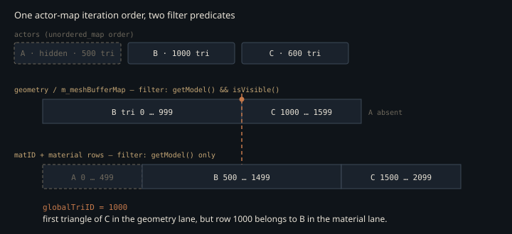

Monograph · Tree · ← Module hub · RT build (BLAS/TLAS)
gpu
RT build (BLAS/TLAS)
buildBLASTLAS order, instance transforms, material lockstep.
Six walks that have to agree
A path-traced hit resolves its material with one addition and no per-instance load: the closest-hit shader adds `gl_PrimitiveID` to the instance's custom index, uses that sum to index the combined index buffer and the per-triangle material-ID table, then reaches the three-vec4 material row through the ID it reads back. Nothing in the shader checks that the number it lands on is the right one. What makes it right is that six separate loops over the same `std::unordered_map<uint64_t, Actor::Ptr>` — the geometry walk in scene upload and five in this file, the last of which appends the TLAS instances — visit actors in the same order and admit the same actors. None of the resulting arrays carries an actor id, so nothing downstream can detect a mismatch.
Iteration order is not the fragile half. `unordered_map` order is arbitrary but stable for a fixed key set, and every walk reads the same live container, so they agree by construction. The fragile half is the predicate at the top of each loop.
The geometry numbering is decided in scene upload, which admits an actor only if its mesh component is visible:
if (meshComponent && meshComponent->getModel() && meshComponent->isVisible()) {ohao/gpu/vulkan/scene_upload.cpp:41That walk fills the combined index buffer and `m_meshBufferMap`, and so fixes the global triangle numbering that `buildBLASTLAS` later hands each instance as a running offset. The per-triangle material-ID table is built by a different walk with a weaker predicate — model present, visibility never consulted — appending one entry per triangle of every model it sees, biased by a material-row cursor that advances the same way:
allMatIDs.push_back(mid + colorOffset);ohao/gpu/vulkan/rt_build.cpp:212Hide one actor and the two numberings diverge from that actor onward: geometry skips its triangles, the material table keeps them, and every hit past it reads a row belonging to a different mesh.

This is latent, not live. `MeshComponent::visible` defaults to true and every `setVisible` call in the tree passes `true`, so no shipping example triggers it — it is a trap laid for the first person who hides an object. A second copy of the same divergence already exists in the opposite direction: the in-place material patch *does* consult visibility,
if (!mc || !mc->getModel() || !mc->isVisible()) continue;ohao/gpu/vulkan/rt_build.cpp:333so it walks a shorter list than the one that allocated the rows, and writes each material's parameters into a row index belonging to some earlier material.
The material and texture fill walks are not independently reachable. `uploadRTMaterialBuffers` and `uploadRTTextureArray` have exactly one caller each — `buildAccelerationStructures`, which calls them in sequence and then unconditionally rebuilds the acceleration structures three lines later:
buildBLASTLAS();ohao/gpu/vulkan/scene_upload.cpp:383So neither fill walk ever runs on a path where the geometry numbering is not being rebuilt alongside it.
The obvious alternative is to fill the material and texture tables inside the loop that lays out geometry, or to key them by actor id and resolve at build time. Nothing in the call graph argues for the split as it stands, because the material and texture walks only ever run as part of a full rebuild. The one geometry-free material update is `updateRTMaterialParams`, a fourth function that exists so the inverse-rendering session can re-shade a scene without touching a BLAS — it patches existing rows in place and uses neither fill walk. What the split costs is that a whole-scene correctness invariant now lives in four filter predicates that nothing relates to each other.
Base color, applied twice
The material row reserves its `.a` channel for a diffuse texture index, with `0xFFFFFFFF` meaning "none". The texture builder makes that sentinel unreachable. When a material has no albedo map it synthesises a 1×1 RGBA8 pixel from the base color, transfer-encoded:
linearToSRGB(col.r), linearToSRGB(col.g), linearToSRGB(col.b), 255ohao/gpu/vulkan/rt_build.cpp:463and then writes that layer's index over the sentinel for every material in the scene:
matColors[i * 3 + 0].a = packIdx(globalMatTexLayer[i]); // diffuseTexIdxohao/gpu/vulkan/rt_build.cpp:806The comment above the encoder justifies it by an `R8G8B8A8_SRGB` view that would decode on sample:
// converts sRGB→linear on sample. We encode linear→sRGB here soohao/gpu/vulkan/rt_build.cpp:456The image is in fact created UNORM, and the hit shader compensates with an explicit 2.2-power decode, so the round trip still closes:
imgInfo.format = VK_FORMAT_R8G8B8A8_UNORM;ohao/gpu/vulkan/rt_build.cpp:593What does not close is that the shader seeds `albedo` with the material row's base color and then *multiplies* the decoded sample into it:
albedo *= pow(sampled, vec3(2.2));shaders/rt/pt_closesthit.rchit:112For a real texture that is the glTF convention — base-color factor times base-color texture. For a synthesised fallback the texture *is* the factor. Writing $c$ for the material's linear base color and $\mathrm{srgb}(\cdot)$ for the 8-bit transfer encode applied at upload:
because the 2.2-power decode inverts the encode to within 8-bit quantisation. A base color of 0.73 shades as roughly 0.54. There is no alternative branch to fall back to: `albedo` is seeded from the material row and the sentinel test carries no `else`, so the only way the scalar value survives is for the multiply not to execute —
if (diffuseTexIdx != 0xFFFFFFFFu) {shaders/rt/pt_closesthit.rchit:109and the fallback synthesis guarantees that it always does.
Only the *diffuse* sentinel is dead by construction. Every material the texture walk sees is handed an albedo layer — a real map when it has one, a synthesised 1×1 pixel otherwise — so `diffuseTexIdx` is never `0xFFFFFFFF`, and the materials that took the fallback get their base color applied once from the material row and once more through that pixel. The normal, roughness-metallic and emissive slots keep their sentinels, and the shader still tests all three.
One extent for every layer
A `VkImage` array demands a single extent for all layers, so the builder picks one size for the whole scene: the largest source dimension in either axis, capped at 2048 or the device limit, whichever is smaller.
const uint32_t textureCap = std::min(deviceProps.limits.maxImageDimension2D, 2048u);ohao/gpu/vulkan/rt_build.cpp:542A layer whose source dimensions differ from that extent is resampled to it by a CPU bilinear filter — for a 1×1 fallback, every output texel reads the same source pixel. A layer that already matches skips the filter and is copied straight through, which covers whichever texture set the extent in the first place, and every layer in a scene whose textures are all 1×1 fallbacks:
if (srcW != static_cast<int>(targetW) || srcH != static_cast<int>(targetH)) {ohao/gpu/vulkan/rt_build.cpp:700So a scene holding one 2048² albedo map pays 2048·2048·4 = 16 MiB for each untextured material too, and a single material can contribute four layers — albedo, normal, roughness-metallic, emissive — each collected into the same flat list.
Upload is serialised by one staging buffer sized for a single layer. Reusing it means each layer must end its recording, submit, and drain the queue before the next can overwrite the staging memory:
vkResetCommandBuffer(uploadCmd, 0);ohao/gpu/vulkan/rt_build.cpp:716N layers therefore cost N full queue idles. None of this is on a frame path — the sequence runs once per scene upload — and both halves are independently fixable: per-layer extents want an array of separate images rather than one array image, and the drain wants a staging buffer sized for the batch. The array also carries no mip chain,
imgInfo.mipLevels = 1;ohao/gpu/vulkan/rt_build.cpp:595which the sampler's `MIPMAP_MODE_LINEAR` cannot compensate for. Ray-tracing stages have no implicit derivatives, so an LOD would have to be selected explicitly in any case; the absent chain is a real minification-aliasing source rather than something sampler state can recover.
Patching a scene without rebuilding it
The vertex and index copies are the only device-local RT *buffers* here; the normal, UV, material-ID and material-color buffers are all `HOST_VISIBLE | HOST_COHERENT` and written by `vkMapMemory` plus `memcpy`. That is what makes `updateRTMaterialParams` possible: the inverse-rendering session re-shades a scene by mapping the material buffer and rewriting only the fields it owns, deliberately leaving the packed texture indices the texture walk wrote into `.a`, `.z`, `.w` and `matColors[i*3+2].x` intact:
// Keep texture index in .aohao/gpu/vulkan/rt_build.cpp:350That creates an ordering requirement in the other direction. `uploadRTMaterialBuffers` destroys and reallocates the color buffer with the sentinel in every texture slot; only the later `uploadRTTextureArray` overwrites those slots with real layer indices. Re-running the first without the second leaves every material claiming no textures.
`updateRTMaterialParams` also rebuilds a second, older per-instance array in a sign-and-magnitude packing that predates the three-vec4 rows — sign carries metallic, magnitude carries roughness, and a ±10 bias tags meshes with more than 100 vertices as "sphere-shaped":
float packed = instMetal > 0.5f ? -(instRough + 0.001f) : instRough;ohao/gpu/vulkan/rt_build.cpp:372It is uploaded to descriptor binding 3, which `pt_closesthit.rchit` and all three raygen variants declare — and none of them ever index. `materialBuf.materials[...]` appears exactly twice in `shaders/`, both times in `rt_gi.rchit`, a different pipeline with its own buffer. The same encoding is written out a second time in `buildBLASTLAS`, which is the copy a full rebuild runs; the two never execute in the same pass, since `buildAccelerationStructures` reaches `buildBLASTLAS` and never `updateRTMaterialParams`. Two source copies of a packing the path tracer does not read.
Contracts
- The material-ID array, the material rows, the texture-layer lists and the TLAS instance list are all indexed positionally against the geometry laid out by `updateSceneBuffers`. Any new walk over `getAllActors()` that filters differently silently renumbers everything after the first skipped actor.
- Four walks decide which actors they admit. The geometry walk filters on `isVisible()`; the material and texture walks do not; `updateRTMaterialParams` does. Fix all four together or none.
- `uploadRTTextureArray` must run after `uploadRTMaterialBuffers` in the same upload. `uploadRTMaterialBuffers` writes `0xFFFFFFFF` into every texture slot it allocates, and `uploadRTTextureArray` is what replaces those sentinels with real layer indices; skipping or reordering it leaves every material untextured.
- Every material is assigned an albedo layer — the real map when it has one, a synthesised 1×1 pixel otherwise — so the closest-hit shader's diffuse sentinel is unreachable, and base color is applied twice for the fallback case. Removing the fallback synthesis means restoring the sentinel, not just deleting the 1×1 pixels.
- All texture layers share one extent chosen from the largest source texture in the scene. Adding one 2048² map inflates every other layer, including 1×1 solid colors, to the same size.
Source files
ohao/gpu/vulkan/scene_upload.cppohao/gpu/vulkan/rt_build.cppshaders/rt/pt_closesthit.rchitohao/render/rt/rt_acceleration_structure.hppParent hub for the full pipeline narrative; this page is the file-level design unit. Sitemap · hover glossary terms anywhere.